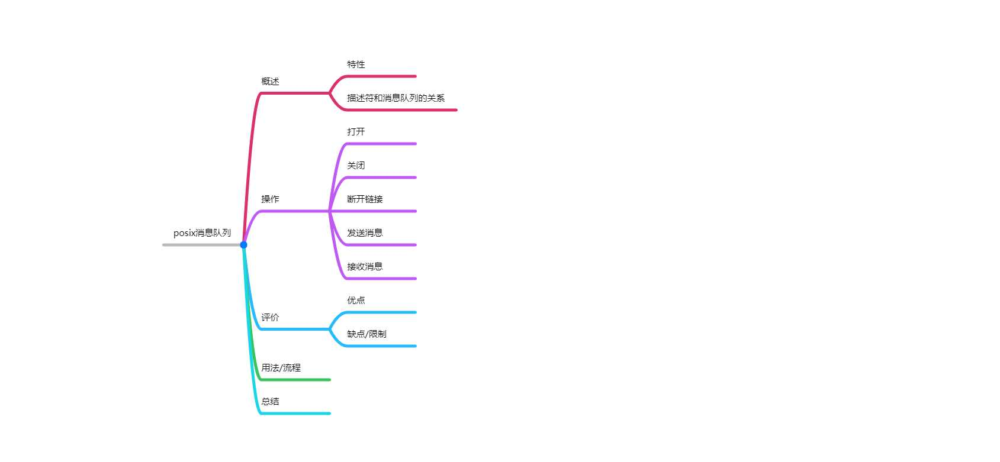

<!DOCTYPE HTML>
<html lang="zh-CN">
<head><meta name="generator" content="Hexo 3.8.0">
    <!--Setting-->
    <meta charset="UTF-8">
    <meta name="viewport" content="width=device-width, user-scalable=no, initial-scale=1.0, maximum-scale=1.0, minimum-scale=1.0">
    <meta http-equiv="X-UA-Compatible" content="IE=Edge,chrome=1">
    <meta http-equiv="Cache-Control" content="no-siteapp">
    <meta http-equiv="Cache-Control" content="no-transform">
    <meta name="renderer" content="webkit|ie-comp|ie-stand">
    <meta name="apple-mobile-web-app-capable" content="我的博客 - blog">
    <meta name="apple-mobile-web-app-status-bar-style" content="black">
    <meta name="format-detection" content="telephone=no,email=no,adress=no">
    <meta name="browsermode" content="application">
    <meta name="screen-orientation" content="portrait">
    <link rel="dns-prefetch" href="https://blog.xtcgch.ink">
    <!--SEO-->

<meta name="description" content="脑容量不够，笔记来凑">


<meta name="robots" content="all">
<meta name="google" content="all">
<meta name="googlebot" content="all">
<meta name="verify" content="all">
    <!--Title-->


<title>【原理】posix消息队列 | 我的博客 - blog</title>


    <link rel="alternate" href="/atom.xml" title="我的博客 - blog" type="application/atom+xml">


    <link rel="icon" href="https://blog.xtcgch.ink/img/background/火炬.ico">

    


<link rel="stylesheet" href="/css/bootstrap.min.css?rev=3.3.7">
<link rel="stylesheet" href="/css/font-awesome.min.css?rev=4.5.0">
<link rel="stylesheet" href="/css/style.css?rev=@@hash">


    


    

</head>

</html>
<!--[if lte IE 8]>
<style>
    html{ font-size: 1em }
</style>
<![endif]-->
<!--[if lte IE 9]>
<div style="ie">你使用的浏览器版本过低，为了你更好的阅读体验，请更新浏览器的版本或者使用其他现代浏览器，比如Chrome、Firefox、Safari等。</div>
<![endif]-->

<body>
    <header class="main-header" style="background-image:url(https://blog.xtcgch.ink/img/head-bg.jpg)">
    <div class="main-header-box">
        <a class="header-avatar" href="/" title="unistd68">
            
        </a>
        <div class="branding">
        	<!--<h2 class="text-hide">Snippet主题,从未如此简单有趣</h2>-->
            
                <h2> 脑容量不够，笔记来凑 </h2>
            
    	</div>
    </div>
</header>
    <nav class="main-navigation">
    <div class="container">
        <div class="row">
            <div class="col-sm-12">
                <div class="navbar-header"><span class="nav-toggle-button collapsed pull-right" data-toggle="collapse" data-target="#main-menu" id="mnav">
                    <span class="sr-only"></span>
                        <i class="fa fa-bars"></i>
                    </span>
                    <a class="navbar-brand" href="https://blog.xtcgch.ink">我的博客 - blog</a>
                </div>
                <div class="collapse navbar-collapse" id="main-menu">
                    <ul class="menu">
                        
                            <li role="presentation" class="text-center">
                                <a href="https://blog.xtcgch.ink/"><i class="fa "></i>主页</a>
                            </li>
                        
                            <li role="presentation" class="text-center">
                                <a href="https://blog.xtcgch.ink/categories/原理/"><i class="fa "></i>原理</a>
                            </li>
                        
                            <li role="presentation" class="text-center">
                                <a href="https://blog.xtcgch.ink/categories/代码/"><i class="fa "></i>代码</a>
                            </li>
                        
                            <li role="presentation" class="text-center">
                                <a href="https://blog.xtcgch.ink/categories/热点/"><i class="fa "></i>热点</a>
                            </li>
                        
                            <li role="presentation" class="text-center">
                                <a href="https://blog.xtcgch.ink/categories/其他/"><i class="fa "></i>其他</a>
                            </li>
                        
                            <li role="presentation" class="text-center">
                                <a href="https://blog.xtcgch.ink/archives/"><i class="fa "></i>时间轴</a>
                            </li>
                        
                    </ul>
                </div>
            </div>
        </div>
    </div>
</nav>
    <section class="content-wrap">
        <div class="container">
            <div class="row">
                <main class="col-md-8 main-content m-post">
                    <p id="process"></p>
<article class="post">
    <div class="post-head">
        <h1 id="【原理】posix消息队列">
            
	            【原理】posix消息队列
            
        </h1>
        <div class="post-meta">
    
    
    <span class="categories-meta fa-wrap">
        <i class="fa fa-folder-open-o"></i>
        <a href="https://blog.xtcgch.ink/categories/原理">
            原理
        </a>
    </span>
    

    
    <span class="fa-wrap">
        <i class="fa fa-tags"></i>
        <span class="tags-meta">
            
                
                    <a href="https://blog.xtcgch.ink/tags/posix" title="posix">
                        posix
                    </a>
                
                    <a href="https://blog.xtcgch.ink/tags/消息队列" title="消息队列">
                        消息队列
                    </a>
                
            
        </span>
    </span>
    

    
        
        <span class="fa-wrap">
            <i class="fa fa-clock-o"></i>
            <span class="date-meta">2019/01/15</span>
        </span>
        
    
</div>

            
            
            <p class="fa fa-exclamation-triangle warning">
                本文于<strong>680</strong>天之前发表，文中内容可能已经过时。
            </p>
        
    </div>
    
    <div class="post-body post-content">
        <p><strong>摘要：</strong>消息队列是一种异步处理数据的方式，本文只讲posix标准下的系统级的消息队列。</p>
<a id="more"></a>
<hr>
<h2 id="脑图"><a href="#脑图" class="headerlink" title="脑图"></a>脑图</h2><p></p>
<hr>
<h2 id="1、概述"><a href="#1、概述" class="headerlink" title="1、概述"></a><table><tr><td bgcolor="#C7C7C7">1、概述</td></tr></table></h2><h3 id="1-1-简介"><a href="#1-1-简介" class="headerlink" title="1.1 简介"></a><font color="#0000FF">1.1 简介</font></h3><p>消息队列是Linux IPC中很常用的一种通信方式，它通常用来在不同进程间发送特定格式的消息数据。</p>
<p>消息是从人类自然语言的角度来称呼，从技术角度来看就是一个数据结构，如字符串，结构体或者类，等等。消息队列中的每条消息具有以下属性：</p>
<ul>
<li>一个表示优先级的整数</li>
<li>消息的数据部分的长度</li>
<li>消息数据本身</li>
</ul>
<p>POSIX消息队列的一个可能的设计是一个如下图所示的消息链表，链表头部有消息队列的属性信息。</p>
<p></p>
<h3 id="1-2-分类"><a href="#1-2-分类" class="headerlink" title="1.2 分类"></a><font color="#0000FF">1.2 分类</font></h3><p>消息队列常有以下种类：</p>
<ul>
<li>System V消息队列</li>
<li>posix消息队列</li>
<li>自定义的各种语言的消息队列</li>
</ul>
<p>其中前2种属于系统级别，可以通过系统调用来进行使用。最后一种是用户自己实现和维护的。</p>
<h3 id="1-3-描述符和消息队列的关系"><a href="#1-3-描述符和消息队列的关系" class="headerlink" title="1.3 描述符和消息队列的关系"></a><font color="#0000FF">1.3 描述符和消息队列的关系</font></h3><p>消息队列描述符是一个进程级别的句柄，它引用了系统层面的打开着的消息<br>队列描述表中的一个条目，而该条目则引用了一个消息队列对象。</p>
<p></p>
<h3 id="1-4-特性"><a href="#1-4-特性" class="headerlink" title="1.4 特性"></a><font color="#0000FF">1.4 特性</font></h3><h3 id="1-5-评价"><a href="#1-5-评价" class="headerlink" title="1.5 评价"></a><font color="#0000FF">1.5 评价</font></h3><p>（1）优点</p>
<p>（2）缺点</p>
<p>（3）限制</p>
<p>POSIX消息队列本身的限制就是<strong><font color="#FF0000">mq_attr</font></strong>中的<strong><font color="#FF0000">mq_maxmsg</font></strong>和<strong><font color="#FF0000">mq_msgsize</font></strong>，</p>
<p>分别用于限定消息队列中的最大消息数和每个消息的最大字节数。</p>
<p>这两个参数可以在调用mq_open创建一个消息队列的时候设定。当这个设定是受到系统内核限制的。</p>
<hr>
<h2 id="2、操作"><a href="#2、操作" class="headerlink" title="2、操作"></a><table><tr><td bgcolor="#C7C7C7">2、操作</td></tr></table></h2><h3 id="2-1-打开"><a href="#2-1-打开" class="headerlink" title="2.1 打开"></a><font color="#0000FF">2.1 打开</font></h3><ul>
<li>头文件：mqueue.h</li>
<li>API:mqd_t mq_open(const char <em> name, int oflag,…/</em> mode_t mode, struct mq_attr <em>attr </em>/);<ul>
<li>name:必填，消息队列的名称</li>
<li>oflag：必填，打开消息队列的选项参数，如下表所示：<ol>
<li>O_CREAT：队列不存在时创建</li>
<li>O_EXCL：与O_CREAT一起创建队列，如果已经存在同名消息队列，则返回失败。</li>
<li>O_RDONLY:只读</li>
<li>O_WRONLY:只写</li>
<li>O_RDWR:可写可读</li>
<li>O_NONBLOCK:以非阻塞方式打开。打开失败会返回EAGAIN错误。</li>
</ol>
</li>
<li>mode：选填</li>
<li>attr：选填</li>
<li>返回：成功-&gt;消息队列描述符（mqd_t类型），失败-&gt;-1</li>
<li>说明：<ol>
<li>O_CREAT和O_EXCL一起使用时，如果此时已经存在同名的消息队列，则返回失败。</li>
<li></li>
</ol>
</li>
</ul>
</li>
</ul>
<h3 id="2-2-关闭一个消息队列"><a href="#2-2-关闭一个消息队列" class="headerlink" title="2.2 关闭一个消息队列"></a><font color="#0000FF">2.2 关闭一个消息队列</font></h3><ul>
<li>头文件：</li>
<li>API：mqd_t mq_close(mqd_t mqdes);<ul>
<li>mqdes：消息队列描述符</li>
<li>返回：成功-&gt;消息队列描述符（mqd_t类型），失败-&gt;-1</li>
<li>说明：close()函数只是断开当前进程与消息队列的关联。删除消息队列需要使用mq_unlick()函数。</li>
</ul>
</li>
</ul>
<h3 id="2-3-删除一个消息队列"><a href="#2-3-删除一个消息队列" class="headerlink" title="2.3 删除一个消息队列"></a><font color="#0000FF">2.3 删除一个消息队列</font></h3><ul>
<li>头文件：mqueue.h</li>
<li>API:mqd_t mq_unlink(const char * name);<ul>
<li>name：消息队列的名称</li>
<li>返回：成功-&gt;消息队列描述符（mqd_t类型），失败-&gt;-1</li>
<li>说明：mq_unlink函数被调用时首先打上了删除消息队列的标记，当所有的进程都退出使用消息队列后，该消息队列才真正被删除。</li>
</ul>
</li>
</ul>
<h3 id="2-4-发送消息"><a href="#2-4-发送消息" class="headerlink" title="2.4 发送消息"></a><font color="#0000FF">2.4 发送消息</font></h3><ul>
<li>头文件：mqueue.h</li>
<li>函数：mqd_t mq_send(mqd_t mqdes, const char * msg_ptr,size_t msg_len, unsigned msg_prio);<ul>
<li>mqdes：消息队列描述符</li>
<li>msg_ptr：指向缓冲区的指针</li>
<li>msg_len：要发送的数据长度，单位-&gt;字节</li>
<li>msg_prio：优先级</li>
<li>返回：成功-&gt;消息队列描述符（mqd_t类型），失败-&gt;-1</li>
<li>说明：</li>
</ul>
</li>
<li>函数:int mq_timedsend(mqd_t mqdes, char <em> msg_ptr, size_t msg_len,unsigned int msg_prio, const struct timespec </em> abs_timeout)<ul>
<li>mqdes:消息队列描述符</li>
<li>msg_ptr:指向接收数据的缓冲区的指针</li>
<li>msg_len:数据长度</li>
<li>msg_prio:消息优先级</li>
<li>abs_timeout:超时时间</li>
<li>返回：成功-&gt;0，失败-&gt;-1</li>
<li>说明：</li>
</ul>
</li>
</ul>
<h3 id="2-5-接收消息"><a href="#2-5-接收消息" class="headerlink" title="2.5 接收消息"></a><font color="#0000FF">2.5 接收消息</font></h3><ul>
<li>头文件：mqueue.h</li>
<li>函数：mqd_t mq_receive(mqd_t mqdes, char <em> msg_ptr, size_t msg_len, unsigned </em> msg_prio);<ul>
<li>mqdes:消息队列描述符</li>
<li>msg_ptr:指向要存储的缓冲区的指针</li>
<li>msg_len:接收数据的长度，单位-&gt;字节</li>
<li>msg_prio:优先级</li>
<li>返回：成功-&gt;消息队列描述符（mqd_t类型），失败-&gt;-1</li>
<li>说明：</li>
</ul>
</li>
<li>函数：ssize_t mq_timedreceive(mqd_t mqdes, char <em> msg_ptr, size_t msg_len,unsigned int msg_prio, const struct timespec </em> abs_timeout)<ul>
<li>mqdes:消息队列描述符</li>
<li>msg_ptr:指向接收数据的缓冲区的指针</li>
<li>msg_len:数据长度</li>
<li>msg_prio:消息优先级</li>
<li>abs_timeout:超时时间</li>
<li>返回：成功-&gt;接收的字节数，失败-&gt;-1</li>
<li>说明：</li>
</ul>
</li>
</ul>
<h3 id="2-6-获取消息队列特性"><a href="#2-6-获取消息队列特性" class="headerlink" title="2.6 获取消息队列特性"></a><font color="#0000FF">2.6 获取消息队列特性</font></h3><ul>
<li>头文件：mqueue.h</li>
<li>函数：mq_getattr(mqd_t mqdes,struct mq_attr * attr);<ul>
<li>mqdes:</li>
<li>attr:消息队列的属性，包含一下四个属性<ul>
<li>long    mq_flags //消息队列的标志：0或O_NONBLOCK,用来表示是否阻塞 </li>
<li>long    mq_maxmsg  //消息队列的最大消息数</li>
<li>long    mq_msgsize  //消息队列中每个消息的最大字节数</li>
<li>long    mq_curmsgs  //消息队列中当前的消息数目</li>
</ul>
</li>
<li>返回：成功返回0，失败返回-1</li>
<li>说明：</li>
</ul>
</li>
</ul>
<h3 id="2-7-设置消息队列的特性"><a href="#2-7-设置消息队列的特性" class="headerlink" title="2.7 设置消息队列的特性"></a><font color="#0000FF">2.7 设置消息队列的特性</font></h3><ul>
<li>头文件：msqueue.h</li>
<li>函数:mqd_t mq_setattr(mqd_t mqdes, struct mq_attr <em> newattr, struct mq_attr </em> oldattr);<ul>
<li>mqdes:消息队列描述符</li>
<li>newattr:新的特性</li>
<li>oldattr:旧的特性</li>
<li>返回：成功-&gt;消息队列描述符（mqd_t类型），失败-&gt;-1</li>
<li>说明：</li>
</ul>
</li>
</ul>
<h3 id="2-8-消息通知"><a href="#2-8-消息通知" class="headerlink" title="2.8 消息通知"></a><font color="#0000FF">2.8 消息通知</font></h3><ul>
<li>头文件：msqueue.h</li>
<li>函数:int mq_notify(mqd_t mqdes, const struct sigevent * notification);<ul>
<li>mqdes:消息队列描述符</li>
<li>notification:新的特性</li>
<li>返回：成功-&gt;0，失败-&gt;-1</li>
<li>说明：</li>
</ul>
</li>
</ul>
<hr>
<h2 id="3、其他API和数据结构"><a href="#3、其他API和数据结构" class="headerlink" title="3、其他API和数据结构"></a><table><tr><td bgcolor="#C7C7C7">3、其他API和数据结构</td></tr></table></h2><hr>
<h2 id="4、使用流程"><a href="#4、使用流程" class="headerlink" title="4、使用流程"></a><table><tr><td bgcolor="#C7C7C7">4、使用流程</td></tr></table></h2><hr>
<h2 id="5、应用场景"><a href="#5、应用场景" class="headerlink" title="5、应用场景"></a><table><tr><td bgcolor="#C7C7C7">5、应用场景</td></tr></table></h2><hr>
<h2 id="6、demo"><a href="#6、demo" class="headerlink" title="6、demo"></a><table><tr><td bgcolor="#C7C7C7">6、demo</td></tr></table></h2><p><a href="https://unistd68.yancoder.com/posix消息队列使用例子/" target="_blank">传送门</a></p>
<hr>
<h2 id="总结"><a href="#总结" class="headerlink" title="总结"></a><table><tr><td bgcolor="#C7C7C7">总结</td></tr></table></h2><ul>
<li>目前只做过demo，暂无总结</li>
</ul>

    </div>
    
    <div class="post-footer">
        <div>
            
        </div>
        <div>
            
        </div>
    </div>
</article>

<div class="article-nav prev-next-wrap clearfix">
    
        <a href="/posix消息队列使用例子/" class="pre-post btn btn-default" title="【代码】posix消息队列使用例子">
            <i class="fa fa-angle-left fa-fw"></i><span class="hidden-lg">上一篇</span>
            <span class="hidden-xs">【代码】posix消息队列使用例子</span>
        </a>
    
    
        <a href="/posix内存映射/" class="next-post btn btn-default" title="【原理】posix内存映射">
            <span class="hidden-lg">下一篇</span>
            <span class="hidden-xs">【原理】posix内存映射</span><i class="fa fa-angle-right fa-fw"></i>
        </a>
    
</div>


    <div id="comments">
        
    
    <div id="vcomments" class="valine"></div>
    <script src="//cdn1.lncld.net/static/js/3.0.4/av-min.js"></script>
<script src="/assets/valine.min.js"></script>

    <script>
        new Valine({
            av: AV,
            el: '#vcomments',
            appId: 'XWA5gq7VCJybw7YQhf5HG20r-gzGzoHsz',
            appKey: '8FW1WEwrysHXaUD1bhGn2Rp8',
            placeholder: '说点什么吧',
            notify: true,
            verify: false,
            avatar: 'https://blog.xtcgch.ink/img/comment-avatar.jpg',
            meta: 'nick,mail'.split(','),
            pageSize: '10',
            path: window.location.pathname,
            lang: 'zh-CN'.toLowerCase()
        })
    </script>


    </div>


                </main>
                
                    <aside id="article-toc" role="navigation" class="col-md-4">
    <div class="widget">
        <h3 class="title">文章目录</h3>
        
            <ol class="toc"><li class="toc-item toc-level-2"><a class="toc-link" href="#脑图"><span class="toc-text">脑图</span></a></li><li class="toc-item toc-level-2"><a class="toc-link" href="#1、概述"><span class="toc-text">1、概述</span></a><ol class="toc-child"><li class="toc-item toc-level-3"><a class="toc-link" href="#1-1-简介"><span class="toc-text">1.1 简介</span></a></li><li class="toc-item toc-level-3"><a class="toc-link" href="#1-2-分类"><span class="toc-text">1.2 分类</span></a></li><li class="toc-item toc-level-3"><a class="toc-link" href="#1-3-描述符和消息队列的关系"><span class="toc-text">1.3 描述符和消息队列的关系</span></a></li><li class="toc-item toc-level-3"><a class="toc-link" href="#1-4-特性"><span class="toc-text">1.4 特性</span></a></li><li class="toc-item toc-level-3"><a class="toc-link" href="#1-5-评价"><span class="toc-text">1.5 评价</span></a></li></ol></li><li class="toc-item toc-level-2"><a class="toc-link" href="#2、操作"><span class="toc-text">2、操作</span></a><ol class="toc-child"><li class="toc-item toc-level-3"><a class="toc-link" href="#2-1-打开"><span class="toc-text">2.1 打开</span></a></li><li class="toc-item toc-level-3"><a class="toc-link" href="#2-2-关闭一个消息队列"><span class="toc-text">2.2 关闭一个消息队列</span></a></li><li class="toc-item toc-level-3"><a class="toc-link" href="#2-3-删除一个消息队列"><span class="toc-text">2.3 删除一个消息队列</span></a></li><li class="toc-item toc-level-3"><a class="toc-link" href="#2-4-发送消息"><span class="toc-text">2.4 发送消息</span></a></li><li class="toc-item toc-level-3"><a class="toc-link" href="#2-5-接收消息"><span class="toc-text">2.5 接收消息</span></a></li><li class="toc-item toc-level-3"><a class="toc-link" href="#2-6-获取消息队列特性"><span class="toc-text">2.6 获取消息队列特性</span></a></li><li class="toc-item toc-level-3"><a class="toc-link" href="#2-7-设置消息队列的特性"><span class="toc-text">2.7 设置消息队列的特性</span></a></li><li class="toc-item toc-level-3"><a class="toc-link" href="#2-8-消息通知"><span class="toc-text">2.8 消息通知</span></a></li></ol></li><li class="toc-item toc-level-2"><a class="toc-link" href="#3、其他API和数据结构"><span class="toc-text">3、其他API和数据结构</span></a></li><li class="toc-item toc-level-2"><a class="toc-link" href="#4、使用流程"><span class="toc-text">4、使用流程</span></a></li><li class="toc-item toc-level-2"><a class="toc-link" href="#5、应用场景"><span class="toc-text">5、应用场景</span></a></li><li class="toc-item toc-level-2"><a class="toc-link" href="#6、demo"><span class="toc-text">6、demo</span></a></li><li class="toc-item toc-level-2"><a class="toc-link" href="#总结"><span class="toc-text">总结</span></a></li></ol>
        
    </div>
</aside>

                
            </div>
        </div>
    </section>
    <footer class="main-footer">
    <div class="container">
        <div class="row">
        </div>
    </div>
</footer>

<a id="back-to-top" class="icon-btn hide">
	<i class="fa fa-chevron-up"></i>
</a>


    <div class="copyright">
    <div class="container">
        <div class="row">
            <div class="col-sm-12">
                <div class="busuanzi">
    
</div>

            </div>
            <div class="col-sm-12">
                <span>Copyright &copy; 2018
                </span> |
                <span>
                    Powered by <a href="//hexo.io" class="copyright-links" target="_blank" rel="nofollow">Hexo</a>
                </span> |
                <span>
                    Theme by <a href="//github.com/shenliyang/hexo-theme-snippet.git" class="copyright-links" target="_blank" rel="nofollow">Snippet</a>
                </span>
            </div>
        </div>
    </div>
</div>


<script src="/js/app.js?rev=@@hash"></script>

</body>
</html>